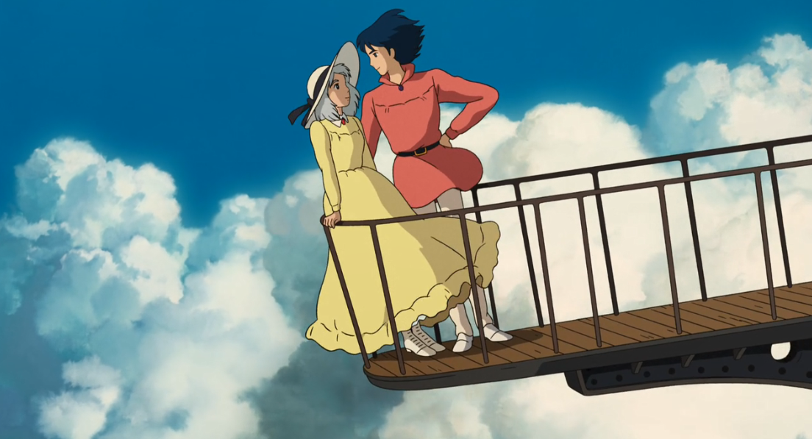

☆Gênero: Romance/ Fantasia/ Aventura
☆lançamento: 15/07/2005
☆diretor(a): Hayao Myazaki
☆Studio: Studio Ghibli
☆classificação indicativa: Livre
☆Duração: 1h 59mn
avaliação:★★★★★ (5,0)
Sinopse
Uma bruxa lança uma terrível maldição sobre a jovem Sophie transformando-a em uma velha. Desesperada, ela embarca em uma odisseia em busca do mago Howl, um misterioso feiticeiro que pode ajudá-la a reverter o feitiço.